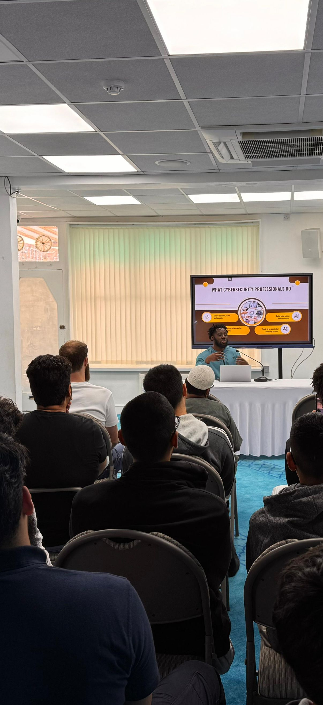
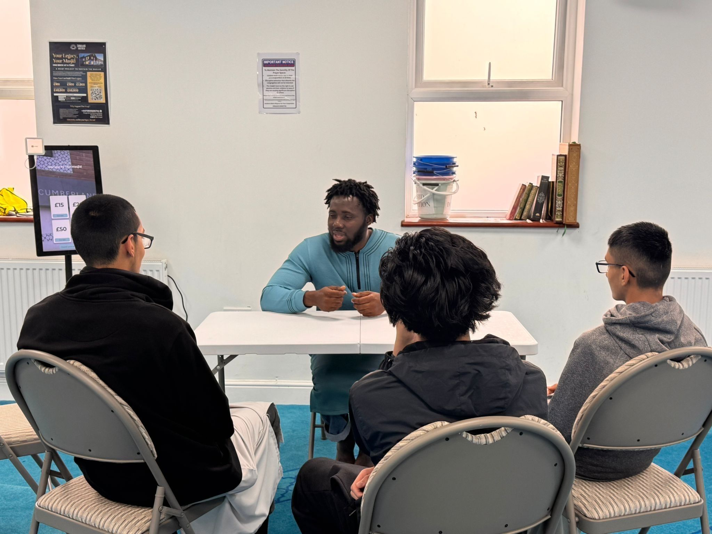
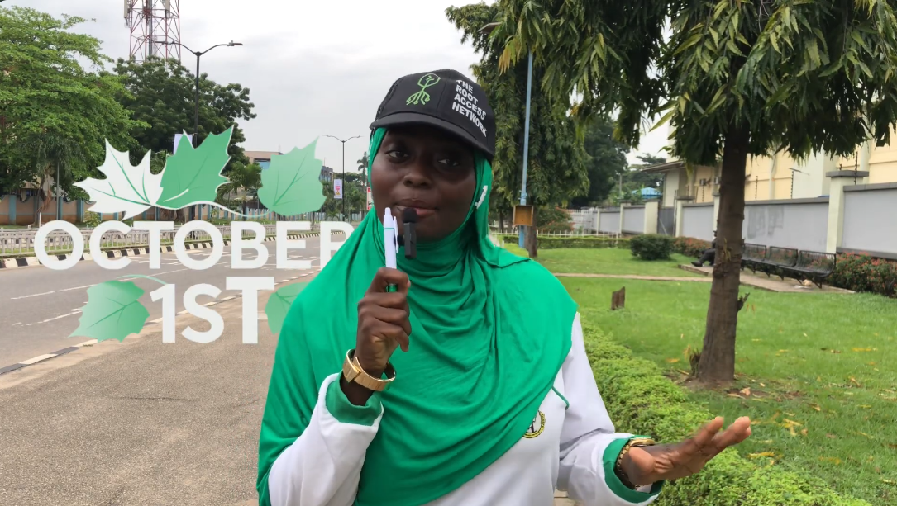
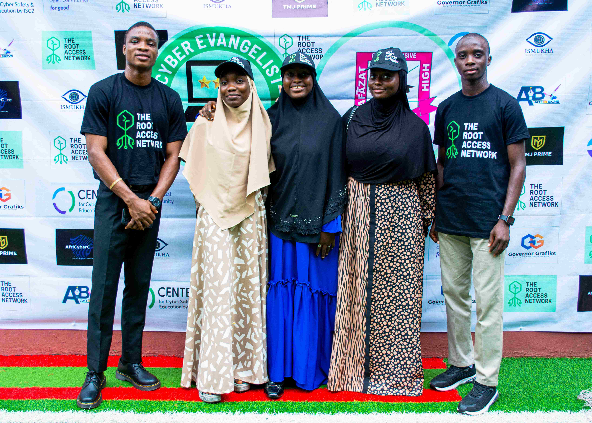
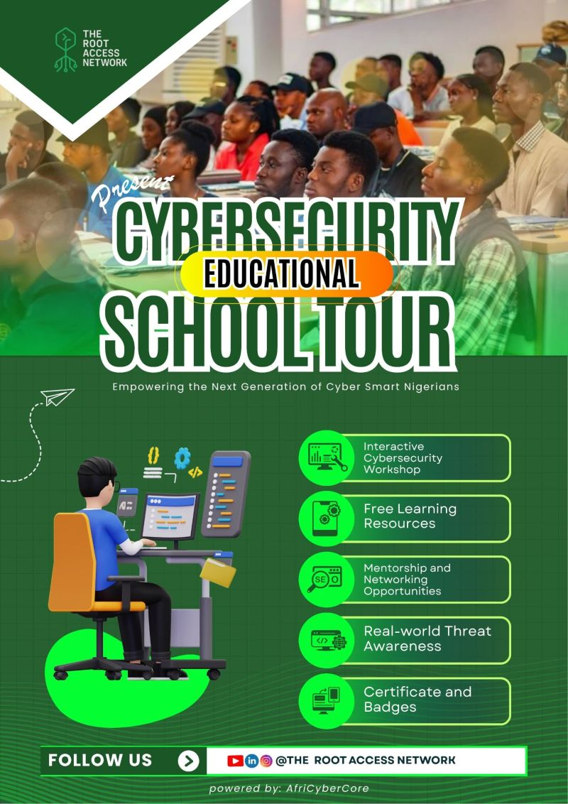

Our Programs
Everything we do is designed around one belief: that access to knowledge changes lives. Here's how we make that happen, week in, week out.
What We Do
From classrooms to street corners, from weekly news roundups to one-on-one mentorship — we show up where it matters most.

Cybersecurity Educational School Tour (CEST)
We go straight to the source — visiting secondary schools across Lagos with live demos, Kahoot! quizzes, and the 'Hacker's Shield' challenge. From Lagos, we go national. From Nigeria, we go continental.

Ubuntu Bridge Initiative
Every week, we provide free data subscriptions and laptop power banks to learners across multiple countries who can't afford connectivity. Because your environment should never be the reason your potential goes unrealised.

Monthly Webinar Series
Launched in 2026, our monthly webinars cover cybersecurity careers, software engineering pathways, CV readiness, and real-world industry preparation. Monthly. Free. No fluff.

Street Cyber Evangelism
We take cybersecurity awareness onto the streets — into markets, public spaces, and community hubs across Lagos. Every conversation we record becomes content that teaches thousands more.

Cybersecurity Weekly News Roundup
Every week, we curate the most important cybersecurity stories from Nigeria and Africa — so our community stays informed, aware, and ahead of emerging threats. Consistent. Free. Africa-focused.

Tech Spotlight Saturday
Every Saturday, we spotlight a rising community member — sharing their cybersecurity journey, challenges, and advice. Proof that there is no single path into this field.

HR Mock Interview Sessions
We connect community members with experienced Talent Acquisition professionals for real, pressure-tested mock interviews. Free for all T.R.A.N members. Open to the public with limited slots.
Myth vs Fact — Cybersecurity Education
Short, sharp posts that correct common cybersecurity misconceptions. Published weekly across LinkedIn, Instagram, and YouTube. Designed for everyone — not just tech professionals.

Weekly Opportunities
Every week without fail, T.R.A.N curates IT and cybersecurity job vacancies, internships, fellowships, bootcamps, and certification opportunities. We also offer CV review support. One post can change someone's career.
Join The Root Access Movement
Partner with us, become a mentor, or support our mission to make cybersecurity knowledge as available as air.
Get Involved